最後の戦いへ
ヒーローとヴィラン、それぞれの想いが交差する物語。
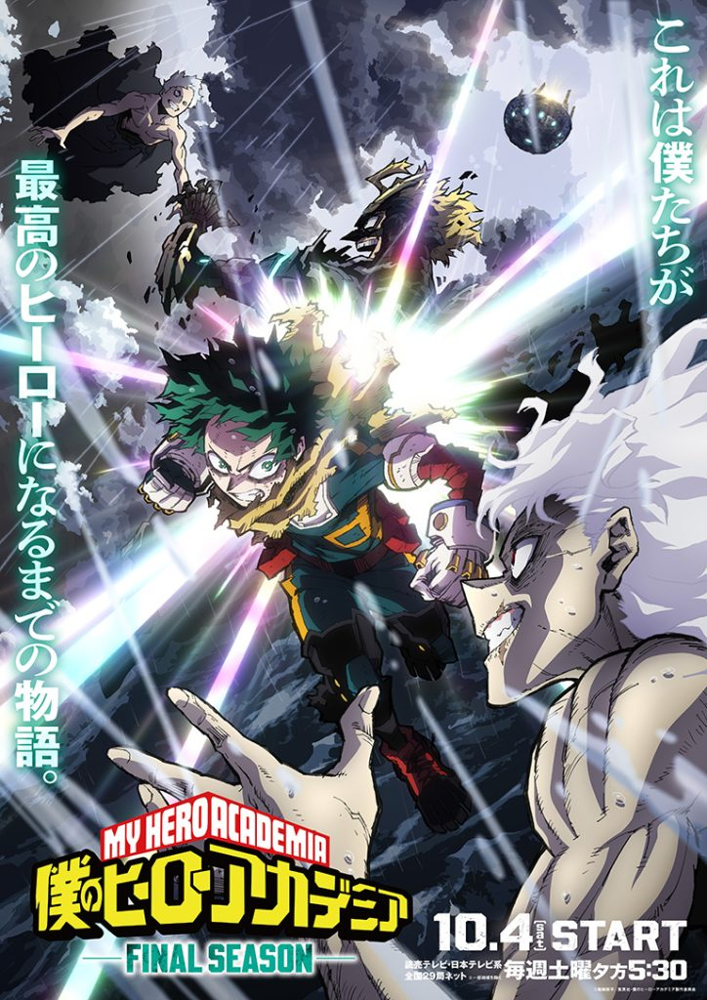
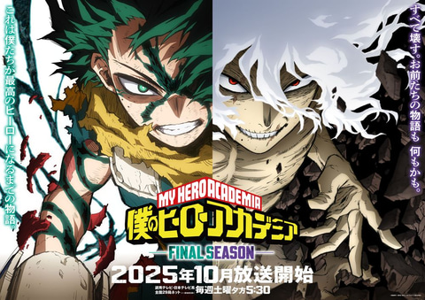
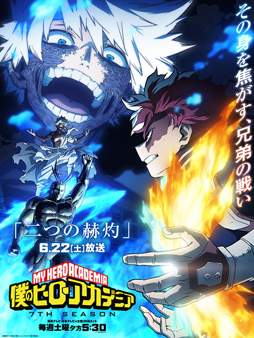
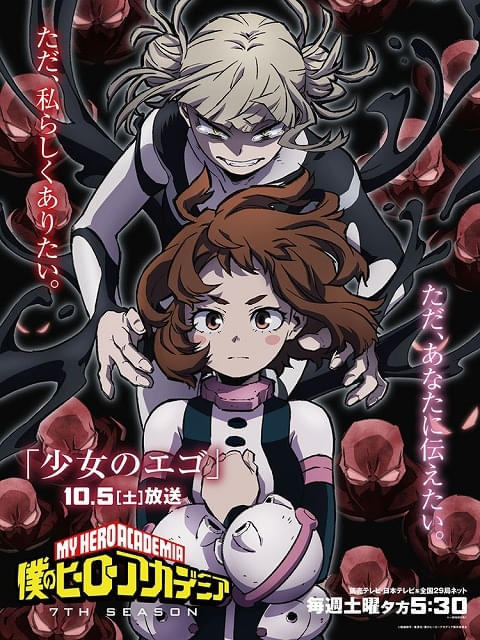
作品をもっと楽しむためのピックアップ。
ヒーローとヴィラン、それぞれの想いが交差する物語。
雄英高校の生徒たちと、立ちはだかるヴィランを紹介。
シーズン、キャラクター、作品の魅力をまとめてチェック。
WHAT IS A HERO?
主人公・緑谷出久は、ヒーローに憧れながらも「無個性」だった少年。ある出会いをきっかけに力を受け継ぎ、雄英高校で仲間たちと成長していきます。
ヒーロー、ヴィラン、家族、友情。それぞれの信念がぶつかり合う、学園ヒーローアクションです。
物語を彩る4つのビジュアル。
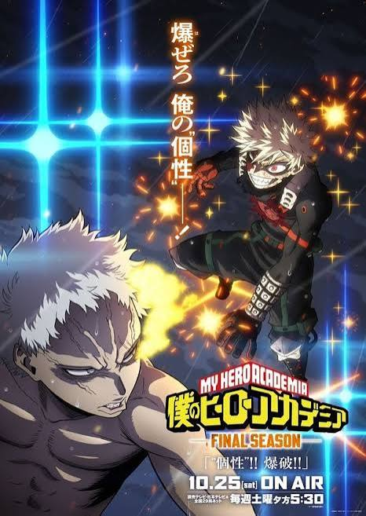
U.A. / VILLAIN DATABASE
それぞれの「個性」と「想い」を持つキャラクターたち。
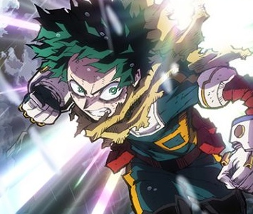
誰よりもヒーローを目指す主人公。受け継いだ力と経験を糧に、仲間とともに前へ進む。
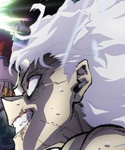
崩壊を操るヴィラン。ヒーロー社会への憎しみを抱き、物語の中心でデクと対峙する。
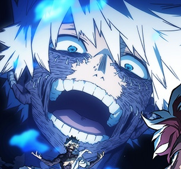
青い炎を操るヴィラン。冷静な表情の奥に強い執念を秘め、轟家と深く関わる。
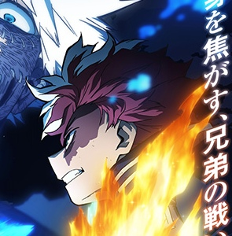
氷と炎の二つの力を持つ雄英生。過去と向き合い、自分自身のヒーロー像を探す。
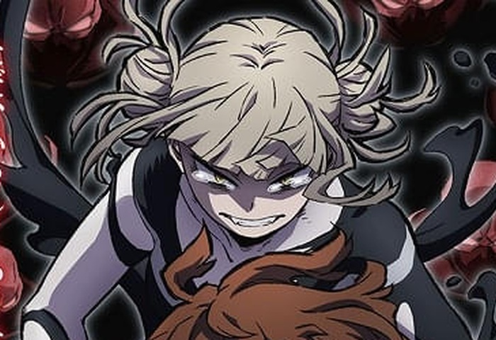
独自の価値観で「好き」を貫くヴィラン。自分らしく生きることを強く求めている。
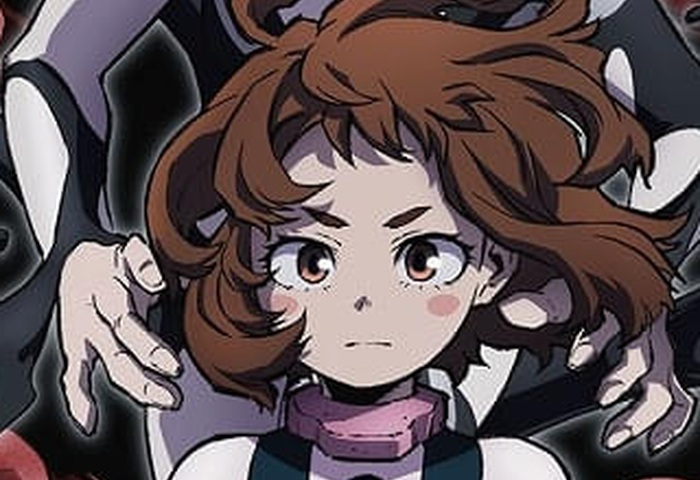
明るく優しいヒーロー志望。人を助けたいという思いを胸に成長していく。
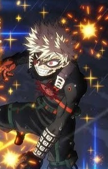
強烈な負けん気と高い戦闘センスを持つ。勝利への執念を原動力に、自分の弱さも乗り越えていく。
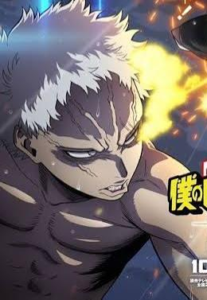
多くの個性を奪い、与え、長い年月にわたって暗躍してきた最大級のヴィラン。ヒーロー社会を揺るがす存在。
10TH ANNIVERSARY
HEROES NEVER STOP.
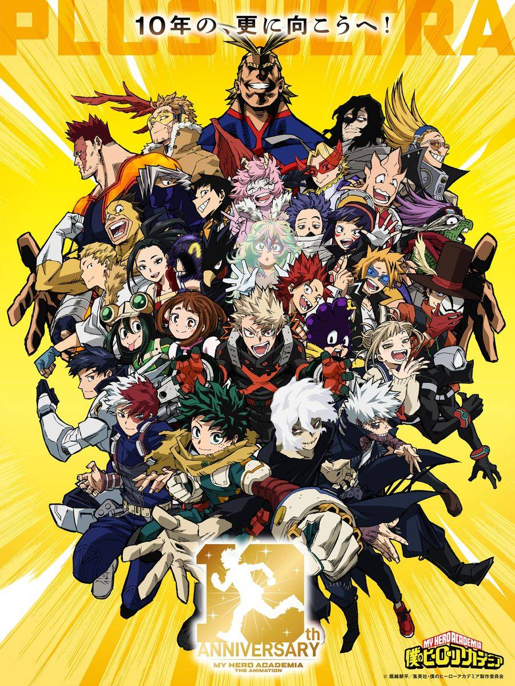
能力だけでは決まらない、工夫と成長が熱いバトルを作る。
憧れから始まった物語が、次の世代へつながっていく。